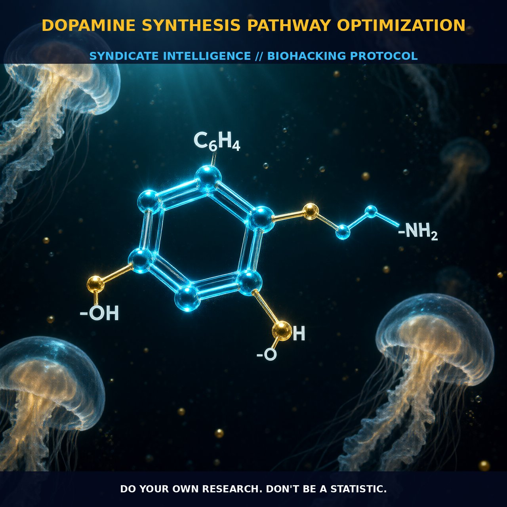

Optimizing Dopamine Synthesis Pathways

1. The Mechanism
Dopamine synthesis begins with the amino acid tyrosine, which is converted to L-DOPA by the enzyme tyrosine hydroxylase. This conversion is the rate-limiting step and requires iron and tetrahydrobiopterin as cofactors. After L-DOPA is produced, it is further converted to dopamine by dopa decarboxylase. This biochemical pathway is finely regulated, and any disruptions can alter dopamine levels, impacting brain functions such as reward and motivation, motor control, and hormone secretion.
Genetic variability, particularly in the CYP450 system, plays a significant role in how individuals process dopamine-modulating compounds. Polymorphisms in enzymes like CYP2D6 can affect the metabolism of L-DOPA, leading to varying efficacy and side effects among individuals. Understanding these genetic factors is crucial for optimizing dopamine synthesis and minimizing potential side effects.
2. Biological Leverage
Optimizing dopamine synthesis offers significant biological leverage, especially in enhancing cognitive and motivational functions. Dopamine is a key neurotransmitter in the mesolimbic reward pathway, influencing behavior patterns such as motivation, reward, and pleasure. By supporting the early stages of dopamine synthesis, individuals can minimize side effects and support their body's internal regulation mechanism, making this approach safer than directly stimulating dopamine receptors with compounds like L-DOPA or dopamine itself.
Modulating tyrosine hydroxylase activity can have profound effects on dopamine levels. Increasing tyrosine intake can provide the necessary substrate for dopamine synthesis, but maintaining a balance is crucial, as excessively high levels of dopamine can lead to dysregulation syndrome characterized by symptoms such as pathological gambling, hypersexuality, compulsive eating, and aggressiveness.
3. Tactical Implementation
To optimize dopamine synthesis pathways, incorporate compounds that support the early stages of dopamine production. Tyrosine and phenylalanine, the amino acids that are precursors to dopamine, can be consumed in moderate amounts to provide the necessary substrates for dopamine synthesis. Additionally, cofactors such as iron and tetrahydrobiopterin, which are required for the activity of tyrosine hydroxylase, can be supplemented to enhance the conversion of tyrosine to L-DOPA.
Timing is crucial when implementing these strategies. Taking tyrosine and phenylalanine in the morning or during periods of high cognitive demand can support the synthesis of dopamine and enhance cognitive performance. For those with genetic variations in the CYP450 system, monitoring individual responses to these compounds is essential to avoid potential side effects. Combining tyrosine and phenylalanine with other nootropics that support cognitive function, such as choline and caffeine, can further enhance their efficacy.
Dosage ranges for tyrosine and phenylalanine typically fall between 500 to 2000 mg, depending on individual needs and genetic factors. It is recommended to start with lower doses and gradually increase to find the optimal level. Pay attention to how these compounds interact with your body and adjust accordingly. Additionally, incorporating B vitamins, particularly vitamin B6, can support the activity of dopa decarboxylase, further enhancing dopamine synthesis.
Prostar Life Hack
Start with a daily dose of 500 mg of tyrosine and 500 mg of phenylalanine in the morning, along with 10 mg of vitamin B6 to support dopamine synthesis. Gradually increase the dose to find the optimal level based on your individual response.
[ AUTHOR: LEAD TECHNICAL RESEARCHER ]